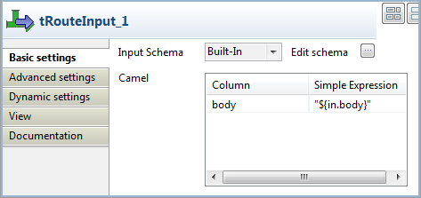
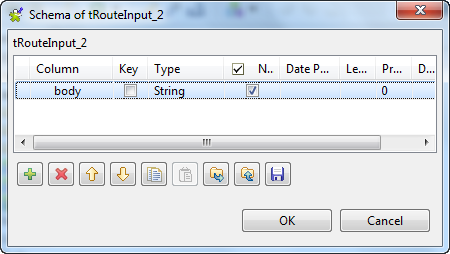
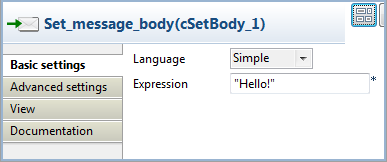

Warning
This component is available to ESB Studio users only.
|
Component family |
ESB/Route | |
|
Function |
tRouteInput accepts messages from a Route. | |
|
Purpose |
tRouteInput allows you to accept messages from a Route. | |
|
Basic settings |
Input Schema |
A schema is a row description, i.e., it defines the number of fields that will be processed and passed on to the next component. The schema is either Built-in or remote in the Repository. Click Edit Schema to make changes to the schema. Click Sync columns to retrieve the schema from the previous component connected in the Job. |
|
|
|
Built-in: No property data stored centrally. |
|
|
|
Repository: Select the Repository file where Properties are stored. |
|
|
Camel |
Enter the message parameters corresponding to the columns you defined in the schema dialog box via the Edit schema button using the Simple Expression Language. For more information about the Simple Expression Language, see the site http://camel.apache.org/simple.html. |
| Advanced settings |
tStatCatcher Statistics |
Select this check box to gather the Job processing metadata at a Job level as well as at each component level. |
|
Usage |
This component can be used as starter component and has an output. It is mandatory that a tRouteInput component is used in the Data Integration Job to be called by a Route using the cTalendJob component. The reason for it is that this will prevent the referenced Job to start automatically when deployed in Talend Runtime. Instead it will only start when it gets called by the Route. For more information about how to use the cTalendJob component, see Talend Open Studio for ESB Mediation Components Reference Guide. | |
|
Limitation |
The Job using a tRouteInput must be launched only within a Route using the cTalendJob component. | |
This scenario describes how to accept messages from a Route using the tRouteInput component. To do this, we need to build a Job to accept the message and a Route to send the message and call the Job using the cTalendJob component.
For more information about how to use the Mediation components, see Talend Open Studio for ESB Mediation Components Reference Guide.
In this section, we will build a Job named RouteCommunication to accept the message from a Route.

Drag and drop a tRouteInput and a tLogRowfrom the Palette onto the design workspace.
Right-click the tRouteInput component, select Row > Main from the contextual menu and click the tLogRow component.
Double-click the tRouteInput component to open its Basic settings view in the Component tab.
Click the three-dot button next to Edit Schema. In the schema dialog box, click the plus button to add a new line of String type and name it body. Click OK to close the dialog box.
In the Simple Expression field for the body element, enter
"${in.body}"to get the body of the input message from the Route.The tLogRow component will monitor the message exchanges and does not need any configuration.
Press Ctrl+S to save your Job.
In this section, we will switch to the Mediation perspective and create a Route to send the message to the Job.
Drag and drop a cMessagingEndpoint, a cSetBody, and a cTalendJob from the Palette onto the design workspace.
Link the components with the Row > Route connection as shown above.
Label the components for better identification of their roles.
Double-click the cMessagingEndpoint component to open its Basic settings view in the Component tab.

In the URI field, enter
"timer://myTimer?period=2000"to start message exchanges every 2000 milliseconds.Double click the cSetBody component to display its Basic settings view in the Component tab.
Select Simple from the Language list and enter
Hello!in the Expression field.Double-click the cTalendJob component to display its Basic settings view in the Component tab.

Select Job RouteCommunication from the repository.
Press Ctrl+S to save your Route.